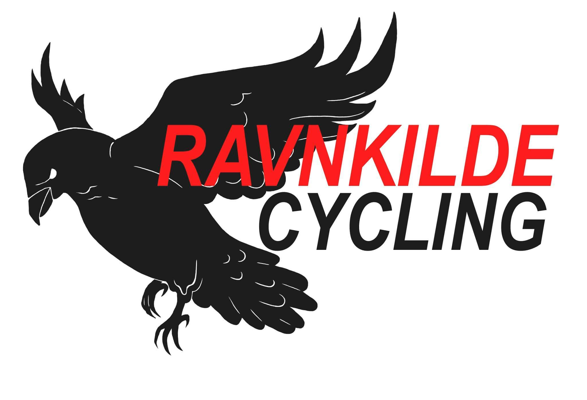

Her vil du kunne se de forskellige logoer jeg har designet. Hvis du vil vide mere om logoet og evt. tilhørende design, så bare giv det et klik!
TopJeg har designet dette logo til et New Zealandsk par, som vil starte et rengøring og bolig klargøringsfirma. De er lokaliseret i havnebyen Whitianga.
Jeg designede både et logo med og uden farve til dem.
Logoet her et til en behandlingsklinik, som behandler skader på kroppen. Behandling bunder i behandling af knoglerne, hvilket har haft indflydelse på designet.
Tilhørende har jeg lavet et tekst frit logo, som fremhæver kendetegnet, knoglen.
Livzonen tilbyder psykoterapi og kropsterapi. Logoet skal udstråle ro og idyl, og vise at man har muligheden for at vokse hvis man arbejder med sig selv.
Grøn vilje er et skoleprojekt, hvor vi har skulle idegenerere et koncept og tilhørende design. Konceptet går ud på at man kan bruge en app til at scanne sine varer, og der igennem, få at vide hvor meget CO2 varen udleder.
Jeg designede logoet, og designede og kodede denne tilhørende side til konceptet.
Siden fungerer både til pc og mobil.
Team Zumba er et skoleprojekt, hvor vi skulle designe og kode en hjemmeside til en danseskole. Vi udvikle deres koncept til et event og teambuilding firma, som tilbyder zumba undervisning og teambuilding øvelser til forskellige begivenheder. Jeg designede logoet du ser her, som er skal vise både zumba og teambuilding.

Her kan du se hjemmesiden jeg har designet og kodet.
Den virker både til mobil og pc.
Lykkemaleren ApS er en selvstændig maler, som ønskede et personligt og anderledes logo i tegenseriestil.
Jeg designede også kaninen i fuld figur, som er blevet trygt på firmabil og bagsiden af t-shirts.

Ravnkilde cycling stødte jeg på som sponsor til et cykelhold jeg har været på. Jeg hjalp Morten Ravnkilde med at få opdateret logoet.
En virksomhed i Nyraad nær Vordingborg der udbyder net lokalt. Dette er mit første officielle logo til en virksomhed.